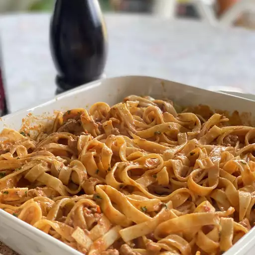

Ragù bolognese

What is it?
Ragù alla bolognese is a traditional
recipe cooked by all the grandmothers of Italy!
This is a trademark of goodness!
Ingredients
- Minced pork meat, with a bit of fat
- Onion
- Tomato sauce
- Celery
- Laurel
- Red wine, a bit for ragù, the rest for you
- Carrots
How to prepare
- First start with minced onion, laurel and minced
carrots. Put them in hot olive oil and let
fry a bit.
- Now let's put the minced pork, and let absorbe
all the flavors
- Put the tomato sauce and a glass of red wine and
let rest for about 45/60 minutes, mixing times to times.
Home